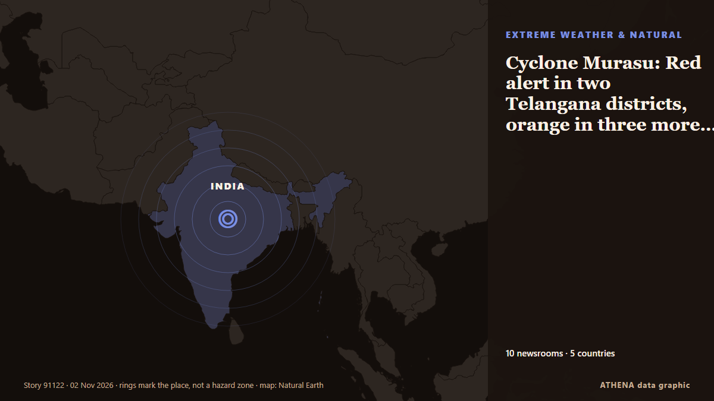

Стихия и катастрофы
СпонсорПри поддержке  Cybernetics and Artificial Intelligence Lab Welcome to the Cybernetics and Artificial Intelligence Laboratory, established at the Department of Business Administration of the National
Cybernetics and Artificial Intelligence Lab Welcome to the Cybernetics and Artificial Intelligence Laboratory, established at the Department of Business Administration of the National
| 20 окт. | 1 |
|---|---|
| 21 окт. | 0 |
| 22 окт. | 0 |
| 23 окт. | 1 |
| 24 окт. | 0 |
| 25 окт. | 0 |
| 26 окт. | 0 |
| 27 окт. | 1 |
| 28 окт. | 0 |
| 29 окт. | 4 |
| 30 окт. | 2 |
| 31 окт. | 2 |
| 1 нояб. | 4 |
| 2 нояб. | 5 |
Заголовки приводятся на английском языке, как они были опубликованы.

Cyclone Murasu: Red alert in two Telangana districts, orange in three more on November 3
Cyclone Murasu is likely to cross the coast between Nellore and Narsapur on the night of November 2-3 as a severe cyclonic storm. из The Hindu
Japan launches new national agency to deal with disasters
TOKYO, Nov 2, (AP): Japan on Monday launched a new national agency focused on disaster management with the goal of making the country better prepared if there's a megaquake along... из Arab Times
5 reasons why the Democrats might not take control of Congress in U.S. midterms
As Democrats seek to regain control of Congress, divisions within the party are emerging over its future direction. из France 24 English
Heavy storms hit south-east Queensland
Heavy storms have brought hail, rain, and damaging winds to south-east Queensland. из Sydney Morning Herald
Depression over Bay of Bengal intensified, says IMD; cyclone ‘Murasu’ may hit Andhra on Nov 3
It is likely to cross the Andhra Pradesh coast as a “Severe Cyclonic Storm with wind speed of 100 to 110 kmph gusting 120kmph between Nellore and Narsapur”. из Hindustan Times
Bolivia declares state of emergency over El Nino
The decree calls for the deployment of more rescue teams in hard-hit areas as the country grapples with both flooding and drought. из Free Malaysia Today
5.2-magnitude quake hits Vanuatu Islands -- GFZ
SYDNEY, Australia (AFP)—A 7.2 magnitude earthquake off Vanuatu triggered a tsunami warning on Saturday, the Pacific Tsunami Warning Centre said. из Jamaica Observer
Greece Issues Severe Weather Warning for Heavy Rain, Thunderstorms and Hail
Greece’s national weather service has issued an extraordinary bulletin warning of heavy rain and thunderstorms across much of the country on Sunday, November 1, and Monday, November 2, with a chance… из Greek Reporter
Philippines raises alert level at Mayon volcano after eruption
Residents in Albay province heard a loud boom around noon on Friday (Oct. из Gulf News
Indonesia: nine orangutans rescued from wildfires return to the forest
Nine orangutans rescued from devastating wildfires in Indonesian Borneo have returned to the forest after weeks of rehabilitation. из Euronews English
Indonesia's toxic wildfire smoke linked to 3,560 deaths in September
Over 57.8 million people faced unhealthy air in September as El Niño-driven dry conditions fuelled wildfires across Kalimantan, Sumatra and other regions. из News of Bahrain
Fire pollution killed 3,560 people in Indonesia in September
JAKARTA: Air pollution from smoke emitted by months of wildfires across Indonesia caused an estimated 3,560 deaths in the vast Southeast Asian archipelago in September alone, according to a… из New Straits Times
Bhutan glacial lake outburst triggers flood
Bengal forest minister Manoj Oraon issued a warning to residents near the Sankosh river. из Times of India
Syria flash floods kill at least 5, force hundreds of families from camps
Heavy rain and flash floods left five people dead, including four children, and forced some 375 families to flee displacement camps in Syria’s Raqqa province. из Al-Monitor